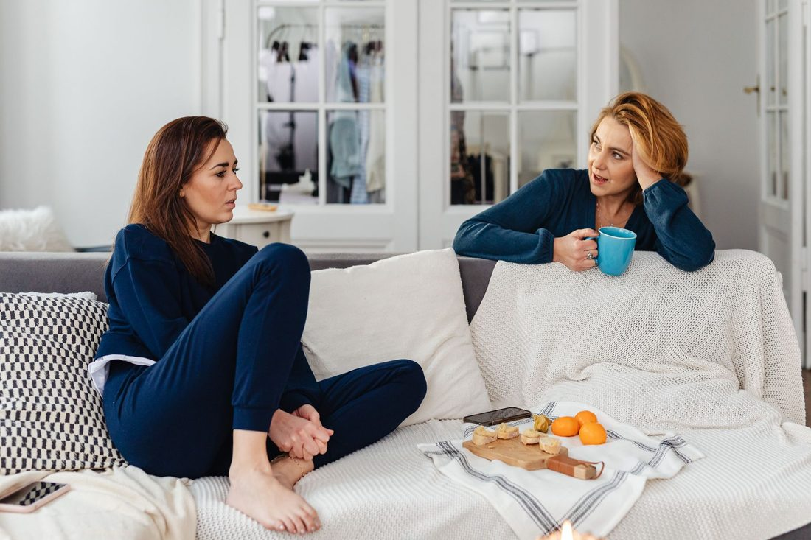
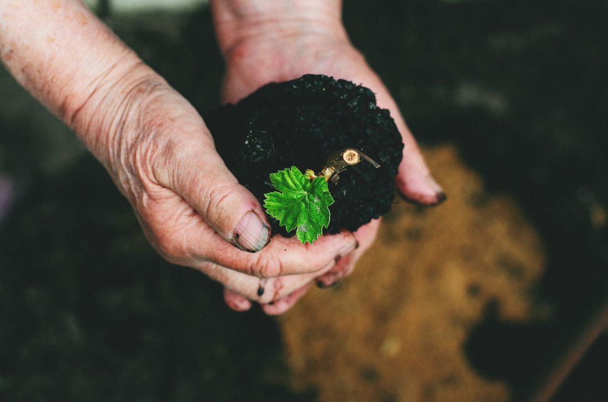
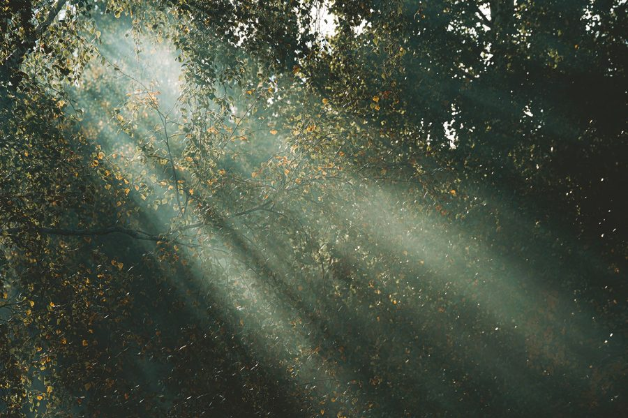

Suelta lo que pesa.
Y vuelve a volar.
Si la ansiedad, los conflictos o la confusión mental te desbordan, te ayudo a salir del bloqueo y a encontrar claridad y equilibrio. A tu ritmo, sin juicios.
Quizá has llegado hasta aquí por algo de esto
Si asientes con alguna, estás en el sitio correcto. Y no estás sola.
Estás en un momento importante y te sientes estancado/a o inseguro/a sobre qué hacer.
Tus relaciones te llenan de tensión o conflictos que te desgastan.
Te sientes desbordado/a, con la cabeza llena de pensamientos que no paran.
Arrastras desde hace tiempo un malestar que te afecta en tu día a día.
Desde ahí también se vuelve, y no tienes que recorrer el camino solo.
«Aunque tú no lo escuches, tu interior es muy sabio.»
Acompaño a las personas a volver a sí mismas
Llevo más de 25 años acompañando a personas a gestionar sus emociones, superar miedos e inseguridades, recuperar la autoestima, sanar sus relaciones y manejar la ansiedad y el estrés. Me he formado en coaching, consejería, terapia emocional, PNL y terapia breve estratégica, lo que me permite adaptarme a cada persona y a su momento.
Mi forma de trabajar es cercana y honesta: no te diré lo que quieres oír, te ayudaré a encontrar lo que necesitas. Soy reservada por naturaleza —mi mejor aval es el cambio real de quienes confían en mí.
Más de 25 años de oficio,
una formación que respalda
Empezó a acompañar en el año 2000. Discreta por naturaleza, su aval está en su trabajo, su método y su formación continua.
Casi todo tu sufrimiento nace de tus pensamientos sobre lo que pasa, no de lo que pasa.
Ahí está tu mayor libertad.
Cuatro pasos para volver a ti
No se trata solo de hablar, sino de aplicar cambios reales fuera de la sesión.

Te escucho de verdad
Un espacio seguro y cercano donde, sin juicios, entendemos juntas qué te está pasando y qué te pesa por dentro.
Vemos qué te bloquea
Identificamos los pensamientos que te hacen sufrir y los patrones que se repiten. Cuando los ves claros, pierden su poder sobre ti.

Te doy herramientas
Concretas y a tu medida, para transformar lo que te duele y sostenerte cada vez que la mente te quiera confundir. Para usarlas en tu día a día.
Recuperas el timón
Vuelven tu calma, tu fuerza y tu confianza. Cuando tomas las riendas de tu vida, el bienestar es tuyo y te pertenece.
Tres formas de caminar contigo
Según lo que necesites hoy. Online desde donde estés o presencial en Barcelona.

Coaching y terapia emocional
Para quien se siente bloqueado, con ansiedad o con un malestar que arrastra. Te ayudo a identificarlo y transformarlo.
- Ansiedad, estrés y bloqueos
- Autoestima y confianza
- Cambios vitales y retos personales
Terapia de pareja
Para volver a comunicaros, resolver conflictos y recuperar la conexión. Un espacio neutral donde los dos podáis hablar de verdad.
- Salir de las discusiones en bucle
- Herramientas para el día a día
- Reencontrar la complicidad
Reiki
Una terapia energética suave para recuperar la calma y reducir el estrés desde la primera sesión. Cada sesión, adaptada a ti.
- Serenidad y calma interior
- Mejor descanso y concentración
- Bienestar integral
Cercana, activa y de resultados
Intervención activa
No me limito a escuchar: trabajamos, te oriento y aplicamos cambios reales.
Un método, no un parche
Trabajo con un método propio para liberar la ansiedad en pocas sesiones: muchos llegan tras años sin resultado y notan el cambio desde el primer encuentro.
Trato cercano
Cercana, cálida y empática. Aquí no eres un paciente, eres una persona.
Herramientas que te llevas
Aprendes recursos prácticos para sostenerte tú sola cuando lo necesites.
El cambio que cuentan quienes ya dieron el paso
Tenía varios ataques de ansiedad al día. El día de mi primera visita con Isabel fue el día en que ya no tuve más ataques. Ni me he vuelto a tomar la medicación. Para mí ha sido un antes y un después.
Hacía 7 años que iba a un psicólogo sin lograr el resultado que buscaba. Gracias a ella, mi vida ha dado un giro total para bien.
Estaba como en un pozo y ahora me siento tan tranquila, tan segura, tan fuerte… El cambio es brutal.
¡Eres como un soplo de aire fresco, tan necesario! Estoy cogiendo las riendas de mi vida.
En la noche más oscura siempre hay una estrella hacia la esperanza. La estrella, en mi caso, has sido tú. Gracias por devolverme la fuerza.
Ideas para empezar a aligerar hoy
Lecturas de Isabel, alojadas aquí mismo. Pulsa para leerlas sin salir de la página.
En el idioma en el que
te salga el alma
Hay cosas que solo se cuentan bien en la lengua de casa. Por eso acompaño en cuatro idiomas: para que cualquier persona, venga de donde venga y esté donde esté, pueda abrirse sin barreras. Online desde donde estés o presencial en Barcelona.
¿Te animas a dar el primer paso?
Una primera conversación para conocernos, ver cómo estás y si puedo ayudarte. Llámame o escríbeme y te responderé personalmente, sin compromiso.